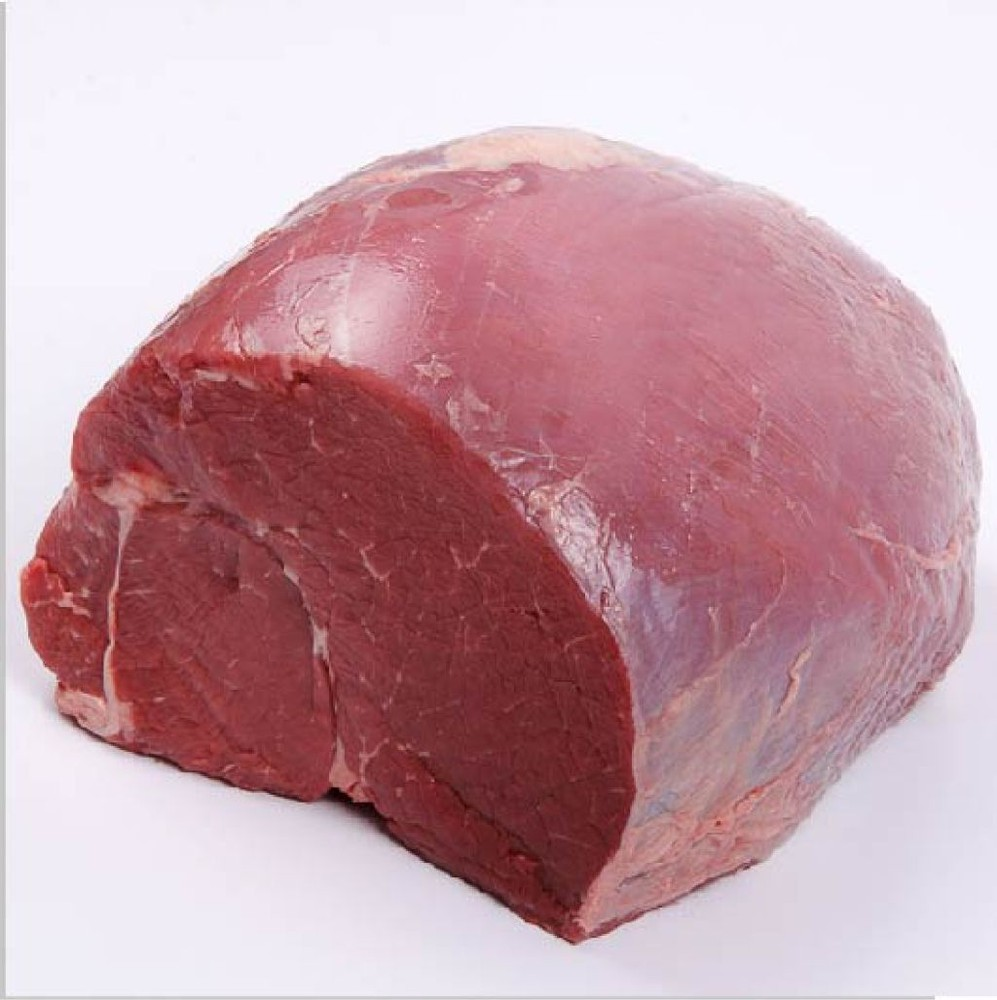
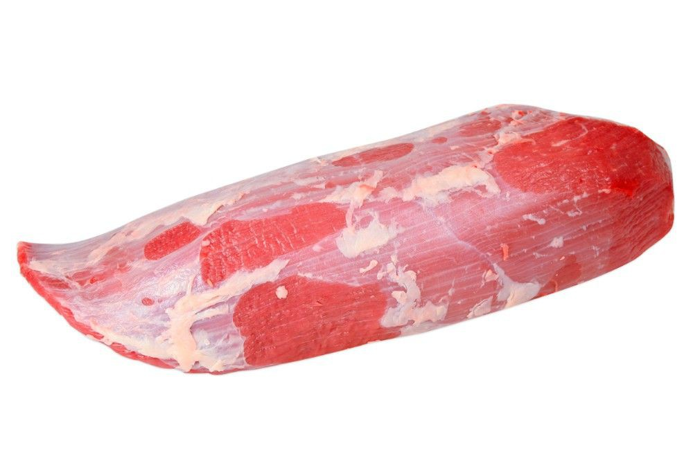
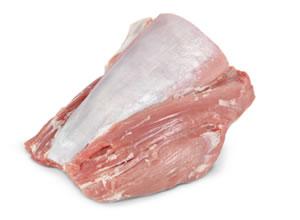
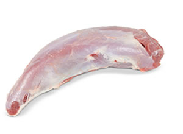
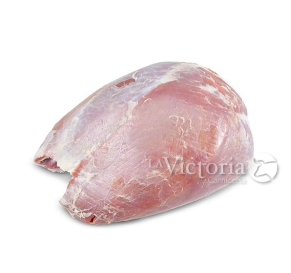

Cortes de carne de res sin grasa
Anteriormente, les habia mostrado algunos ricos cortes recomendables para cuando hagas una rica carne azada,
el problema era de que todos esos cortes, tenian mucha grasa y los cortes eran muy gruesos, asi que ahora te mostrare,
algunos cortes que no contienen tanta grasa como la carne para asar, y asi mismo, los bisteces sean delgados y ricos.
Piezas de res sin grasa
Al saber que piezas de bistec son las que debes de pedirle al carnicero, te da una ventaja muy buena
pues a parte de saber el nombre, tambien debes saber identificarlas. En algunas carnicerias, tu puedes llegar
y decir, - me da un kilo de bistec sin gordo por favor -, el carnicero te lo va a dar, pero es probable que el corte
no te guste, pues puede tener muchos nervios entre la carne (cosa que es normal pero probablemente no te guste)
o te pueden dar cortes que te pueden salir duros al momento de cocinarlos. A continuacion, aqui los cortes de carne:
Bola
Suave y jugosa, la bola de res es una de las mejores piezas para alguien que no prefiere la grasa.
Esta pieza es facil de hacer bisteces y facil de cocinar, pues a parte de ser muy suave, el carnicero
tiene la oportunidad de hacer los bisteces tan delgados como tu mismo la pidas. Te recomiendo que
la utilices para cocinarla con alguna sopa o algun complemento de tu agrado.
Tapa de paloma

Al igual que la bola, esta pieza es muy suave pero un poco reseca. Esta píeza es un poco complicada
pues es facil de bistecear pero dificil de hacer los bisteces bien; me explico, esta pieza es facil de hacer
los bisteces delgados y bonitos, pero es dificil seguir la hebra para que salgan blanditos, por eso cuando la
fijate bien que el carnicero ponga la pieza esquinada y no derecha, pues si la pone derecha, tus bisteces
saldran muy duros, este error es muy comun entre los carniceros de todos lados. Te la recomiendo para cocinar
bisteces empanizados.
Cuete de res
Esta pieza es muy reconocida por guadalajara, por ser la pieza perfecta para cocinar bisteces empanizados,
pues su textura suave pero un poco reseca, hace que el empanizador no se caiga de los bisteces y este totalmente
pegado a la pieza. Te la recomiendo si te gustan los bisteces pequeños y delgados.
Brazo de filete
 Esta pieza es muy pequeña, pues proviene de la espalda de res. Esta pieza contiene un poco de nervios entre
la carne, pero eso no significa que no sepa buena, esta pieza es muy suave y jugosa, ademas de que es muy
codiciada entre los conocedores de carne. Te la recomiendo para cocinar carne en su jugo o carne con chile.
Pescadito de res
Esta pieza es muy pequeña pero muy sabrosa, su tamaño es pequeño y redondo, ideal para cocinarla si tienes
casuelas pequeñas. Muchos utilizan esta pieza para cocinar salpicon de res, pero tambien la puedes preparar
con algun complemento como frijoles o simples bisteces.
Bola de espalda
Generalmente esta pieza viene junto a otra llamada "solomillo" y es una pieza que bien puede tener gordo
pero lo correcto es que te la den sin gordo. Al igual que la tapa de paloma, esta pieza debe de ser bien bisteceada
en contra de la hebra, pues existe el caso en el que puedan cortarla mal y salir dura. Esta pieza es facil de cocinar
y muy recomendable para hacer carne en su jugo, bistec guizado o tacos de bistec. Considero que esta pieza es muy
practica, pues incluso se puede cocinar en el asador sin problemas.
Estas son las piezas que yo te recomiendo, si a ti no te gusta la grasa. Como ves en las imagenes ninguna pieza
tiene tanta grasa como lo son las piezas para asar, asi que, tu mismo puedes probarlas todas y decidir cual es
la que te parece mas rica y facil de cocinar.
Si te interesa, puedes visitarnos en nuestra pagina de